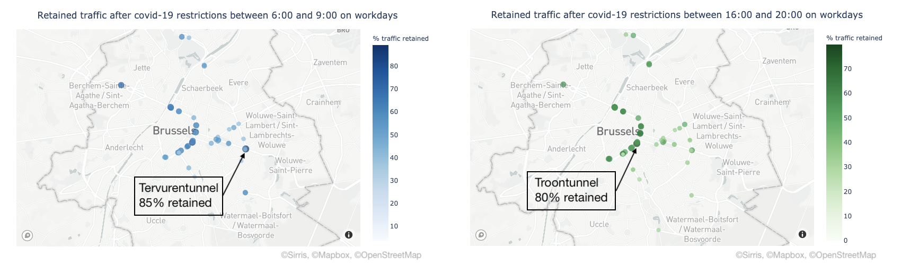
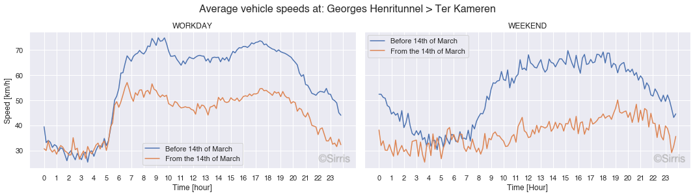
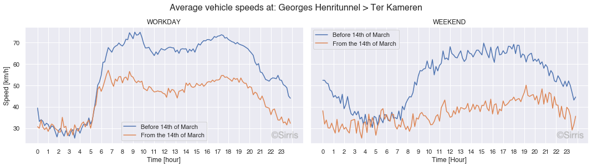

Insightful blueprints of Brussels traffic emerge in times of covid-19
Category > Blog
Wed 29 April 2020In the context of an industrial PhD project sponsored by Innoviris, the EluciDATA Lab of Sirris joined forces with Macq and VUB to contribute to better traffic management solutions for the city of Brussels. To this end, we aim for developing an advanced trend analytics engine that facilitates understanding traffic situations in an accurate and situation-aware way.
In January 2020, we started gathering publicly available data captured by Brussels Mobility at 55 locations in the city, without having the slightest suspicion that the escalation of the corona epidemic will deliver interesting data to analyse.
The lockdown measures introduced on 13/03 imposed serious restrictions on the traffic in Brussels, permitting only limited commuting. In this way, the observed traffic after the introduction of the measures can be considered as an opportunity to derive some characteristic blueprints of the traffic in Brussels.
Traffic volume unevenly affected by the lockdown
As expected, the overall traffic volume in Brussels has dramatically reduced during the lockdown period. The figure below illustrates the percentage of traffic volume retained during the lockdown in comparison to the period before for all observed locations. For some key locations (e.g. Keizer Karellaan, Willebroekkaai and Troontunnel), more than 50% of the traffic was retained, while other locations (e.g. Lorrainedreef, Vleurgattunnel and Stefaniatunnel exit direction centrum) have seen a substantial reduction, up to 80%, of traffic volume in comparison to the pre-lockdown period.
On average 40% of the traffic volume was retained during the lockdown. The blue dots in the image indicate the locations where the amount of traffic has decreased more than the average, while the red dots indicate a smaller decrease than the average. It is clear the small ring of Brussels retains more volume compared to the residential areas around it. This might mean the functional traffic in the city of Brussels is less reduced than the recreational traffic.

However, focusing on the rush hour periods offers completely different figures. For instance, the left figure below depicts the percentage of traffic volume retained during the lockdown period for each location between 6:00 and 9:00 on workdays. It can be observed that the morning traffic for some locations (e.g. Kunst-Wettunnel, Troontunnel and Tervurentunnel) is in the range of 80% of its normal volume, i.e. it is only slightly reduced due to the covid-19 restrictions.

Analogously, the evening traffic between 16:00 and 20:00 on workdays, delivers similar results as visualised in the right figure above. For instance, for the locations at Rogiertunnel, Kunst-Wettunnel and Troontunnel between 65% and 80% of the regular traffic volume has been retained.
All the above is yet one more confirmation of how saturated the traffic in Brussels has become in the recent years. Even a lockdown situation, never experienced before, is not able to relieve the traffic intensity of the busiest locations in Brussels. It is also important to realise that those very hectic traffic locations in Brussels are probably not that much affected by school related as well as by recreational traffic. This explains to some extent why the lockdown does not affect the traffic volume so much for these locations.
Fingerprinting of weekly traffic confirms compliance with lockdown measures
In the plots below, we have extracted a weekly traffic intensity fingerprint for two monitored locations in the form of a circular heatmap. The circular heatmap depicts the days of the week as concentration circles starting with Monday in the inner circle, followed by Tuesday in the next circle and so on till placing Sunday in on the most outer one. The circles are divided in sectors of 1 hour. The darker the colour of a sector the more intense traffic has been observed.


The plot depicts the intensity fingerprints for weeks 8 to 16 (17th of February to 19th of April) for the Tervurentunnel (in direction of the city centre) and the Troontunnel (direction Belliard). It is interesting to observe how the traffic intensity evolved across the weeks for each of the locations. Starting on Saturday (March the 14th, week 11) restaurants had to close and some non-essential shops were not allowed to open during the weekend, which resulted in a somewhat reduced traffic during the weekend for this week. On Wednesday (March the 18th) at 12:00 in the following week (week 12), even more restrictions were applied, e.g. more shops had to close and non-essential travels by private vehicles were prohibited, which is clearly detectable in the heatmap of week 12.
From week 13 onwards (lockdown), we obtain for each week a very similar profile. The similarity between those consecutive weeks indicates that citizens in Brussels continue to follow the measures as well as at the beginning, no relaxation can be observed. These latter profiles are very interesting since they offer a kind of blueprint for the amount of absolutely inevitable traffic in Brussels.
Distilling traffic volumes associated to specific activities
The collected data spans over a time period covering 3 different distinct traffic situations:
- Normal referring to regular work-school etc. weeks.
- Carnival holidays referring to the vacation (week 9), which excludes school-related traffic and some work-related traffic due to parents taking vacation. At the same time, those families have more time for recreational trips (e.g. city trips, sport, shopping, etc.).
- Lockdown weeks referring to the period of activity restrictions due to covid-19 measures, including only traffic related to work which cannot be performed via teleworking and other minimal essential traffic (e.g. shopping for food).
In the figure below, 5 heatmaps are shown concerning traffic information of the Troontunnel. The top three heatmaps are showing the characteristic fingerprints of the three distinct traffic situations. For the normal and regular fingerprints, the traffic volumes represented are aggregated over several weeks, while the carnival fingerprint is based on the traffic counts of a single week (week 9).
Comparing the characteristic fingerprints allows to disaggregate the traffic volume into separate intensities associated with different activities. For instance, by subtracting the vehicle counts during the carnival holidays from the counts of normal weeks, a new (fingerprint) heatmap is obtained, labelled with “1”. The red sectors in the heatmap indicate more traffic volumes for the normal week when comparing with the vacation period and the blue sectors signify less traffic in the regular week, i.e. increase of traffic during the vacation for those time slots. For instance, the Troontunnel shows both increases and decreases of traffic during the carnival period in comparison to the regular weeks. The differences in vehicle counts are spread over the whole heatmap and do not seem to have daily recurring peaks. The latter might be because in general there is not a lot of school traffic in that area. If this is correct, we actually segregated the amount of traffic which is additional recreational traffic due to the hollidays.

The fingerprint labeled with "2", resulting from subtracting lockdown traffic volumes from the corresponding ones during the vacation week, is more intriguing. Both fingerprints summarize traffic volumes not containing school-related travel. However, the vacation week still contains a lot of recreational traffic related to school children, which is not the case for the lockdown weeks. In addition, the vacation week also captures traffic related to people who switched to teleworking or are technically unemployed during the lockdown and also non-essential activities (e.g. non-food shopping, restaurant dinners and events). All those missing activities during the lockdown were captured in heatmap "2". In there, the red color denotes the amount of traffic volume reduced during the lockdown vs. the vacation week, while the blue color denotes an increase of traffic volume. Clear morning and evening red peaks can be observed, which signify substantial reduction of work-related traffic due to the covid-19 restrictions. Outside the morning and evening segments, more traffic is observed during the vacation week compared to the lockdown weeks, which can be attributed to reacreational and other 'non-essential' traffic, e.g. sport, restaurants, events, etc.
The purpose of this analysis is to illustrate that due to the unique restrictions for covid-19, we are able to split the characteristic fingerprint of normal traffic into three subcategories. Or in other words, the normal heatmap can be disaggregated into the sum of heatmaps 1 , 2 and 3.
Most of the present teleworkers are typically biking to work?
Similarly, as for vehicle traffic, we have extracted a weekly intensity fingerprint for biking traffic since we also have access to bike counting data of the city of Brussels. The heatmaps for two locations during weeks 8-16, displayed below, show that the intensity of the biking traffic has increased in the lockdown weeks. This is not surprising since walking and biking is practically the only allowed outdoor activity. For example, in the Koolmijnkaai, a street in the city centre, we can see that after the covid-19 restrictions the clear morning and evening peaks disappeared, but the amount of traffic (most probably recreational) during the afternoon (especially in the weekend) increases. In the Franklin Rooseveltlaan (near to Ter Kamerenbos) this difference is even more pronounced.


It is also interesting to observe the clear morning and evening peaks in the Koolmijnkaai, which must be mostly representing work commuting as there is no peak on Wednesday afternoon. Note that the morning and evening peaks have fully disappeared in the lockdown weeks. This raises the question whether most of the bikers switched to teleworking during the lockdown.
Is speeding induced by too much traffic?
Another interesting measure for studying Brussels traffic is of course speed. The figure below displays the relative difference in average speed, i.e. lockdown vs. normal period, for each of the 55 locations. For instance, an average slowdown of 14 km/h was detected in the Georges Henri tunnel, while an increase of 12 km/h, on average, was observed in the Troontunnel.

It is normal to expect, considering the traffic in Brussels is very saturated, that for many locations the average speed has increased since the start of the covid-19 restrictions. For instance, during a regular workday, the Troontunnel is often clogged with traffic and the maximum allowed speed of 50km/h is hardly possible. It is interesting to observe that, although the morning and evening peaks of traffic volume in the Troontunnel have been reduced with only 21% in the lockdown, the average speed has increased to the legal maximum. Thus, it seems that the modest reduction of traffic volume is already sufficient to permit fluent traffic flow.
 

It is also remarkable that during the lockdown weeks people seem to respect the legal speed limit more. For instance, the Georges Henri tunnel has a speed limit of 50 km/h which is rarely respected during normal times, as it can be observed from the plots above, showing that the average speed hovers around 70 km/h during the day. However, during the lockdown weeks the average speed dropped to the maximum allowed of 50km/h. The same phenomenon can be observed during the weekends for both mentioned locations.
We believe there are 2 possible explanations for this phenomenon. Either the drivers are less stressed since the traffic is less hectic, there are almost no traffic jams, people are not in hurry for a work/school or any other appointment (e.g. reservation at a restaurant, training in sports club and music event), or the drivers who typically violate speed limits are not driving in Brussels during the lockdown. Or perhaps we are observing a combination of both?
What’s next?
The covid-19 restrictions will be phased out in the next weeks/months by the government. It will be interesting to see how fast the population will react to this and whether we will return to the original traffic patterns.
Project subsidized by the Brussels-Capital Region - Innoviris.

Authors: Michiel Dhont and Elena Tsiporkova<
Permanent URL